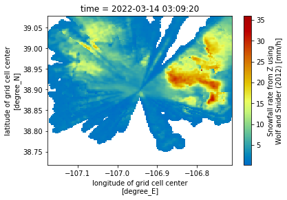
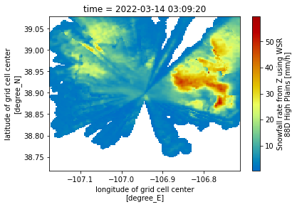
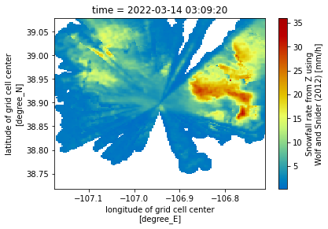
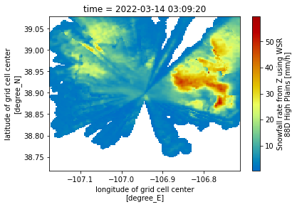

Grid QC’d Dataset - Surface QUantitatIve pRecipitation Estimation (SQUIRE)
Contents
Grid QC’d Dataset - Surface QUantitatIve pRecipitation Estimation (SQUIRE)#
Imports#
import pyart
import matplotlib.pyplot as plt
import numpy as np
import glob
from pathlib import Path
## You are using the Python ARM Radar Toolkit (Py-ART), an open source
## library for working with weather radar data. Py-ART is partly
## supported by the U.S. Department of Energy as part of the Atmospheric
## Radiation Measurement (ARM) Climate Research Facility, an Office of
## Science user facility.
##
## If you use this software to prepare a publication, please cite:
##
## JJ Helmus and SM Collis, JORS 2016, doi: 10.5334/jors.119
ERROR 1: PROJ: proj_create_from_database: Open of /ccsopen/home/mgrover/mgrover/sail-radar-dev/share/proj failed
Retrieve List of Files (QC’d Data)#
files = sorted(glob.glob("/gpfs/wolf/atm124/proj-shared/gucxprecipradarcmacM1.c1/ppi/202203/gucxprecipradarcmacM1.c1.20220314-03*"))
Load Data into Py-ART and Plot#
radar = pyart.io.read(files[0])
display = pyart.graph.RadarDisplay(radar)
fig = plt.figure(figsize=[5, 5])
ax = fig.add_subplot(111)
display.plot('snow_rate_ws88diw',
0,
vmin=0,
vmax=50,
title="PPI",
cmap='pyart_HomeyerRainbow')
plt.xlim(-20, 20)
plt.ylim(-20, 20)
(-20.0, 20.0)
Grid Using Nearest Neighbor Interpolation#
Setup a Helper Function and Configure our Grid#
def compute_number_of_points(extent, resolution):
"""
Create a helper function to determine number of points
"""
return int((extent[1] - extent[0])/resolution)
# Grid extents in meters
z_grid_limits = (500.,5_000.)
y_grid_limits = (-20_000.,20_000.)
x_grid_limits = (-20_000.,20_000.)
# Grid resolution in meters
grid_resolution = 250
Once we setup our interpolation, we can compute the number of points for each extent
x_grid_points = compute_number_of_points(x_grid_limits, grid_resolution)
y_grid_points = compute_number_of_points(y_grid_limits, grid_resolution)
z_grid_points = compute_number_of_points(z_grid_limits, grid_resolution)
print(z_grid_points,
y_grid_points,
x_grid_points)
18 160 160
Create our Grid using grid_from_radars#
grid = pyart.map.grid_from_radars(radar,
grid_shape=(z_grid_points,
y_grid_points,
x_grid_points),
grid_limits=(z_grid_limits,
y_grid_limits,
x_grid_limits),
method='nearest'
)
Visualize our Grid#
We start by converting our grid to xarray
ds = grid.to_xarray()
ds.snow_rate_ws88diw.isel(z=0).plot(x='lon',
y='lat',
vmin=0,
vmax=50,
cmap='pyart_HomeyerRainbow')
<matplotlib.collections.QuadMesh at 0x7f33c6f78eb0>
Determine the Lowest Height in Each Column#
We plotted the lowest level (500 m) in the plot above. It would be more helpful to have data from the lowest data point (lowest z) in each column (across time, latitude, and longitude)
We start first by creating a new field in our dataset, height_expanded, which is a four-dimensional (time, z, x, y) vertical coordinate, with nan values where we have missing snow rate values.
ds["height_expanded"] = (ds.z * (ds.snow_rate_ws2012/ds.snow_rate_ws2012)).fillna(10_000)
Next, we find the index of the lowest value in this column, using the .argmin method, looking over the column (z)
min_index = ds.height_expanded.argmin(dim='z',
skipna=True)
Here is a plot of the lowest value height in the column for our domain:
**Notice how some values are the top of the column - 5000 m, whereas some of the values are close lowest vertical level, 500 m
ds.height_expanded.isel(z=min_index).plot(vmin=500,
vmax=5000);
Apply this to our snow fields#
We first check for snow fields in our dataset, by using the following list comprehension line:
snow_fields = [var for var in list(ds.variables) if "snow" in var]
snow_fields
['snow_rate_ws88diw',
'snow_rate_m2009_1',
'snow_rate_m2009_2',
'snow_rate_ws2012']
Next, we subset our dataset for only these fields and select our lowest z value (using the index we built before)
subset_ds = ds[snow_fields].isel(z=min_index)
Visualize our closest-to-ground snow value#
Now that we have the lowest vertical level in each column, let’s plot our revised maps, which only have dimensions:
time
latitude
longitude
for snow_field in snow_fields:
subset_ds[snow_field].plot(x='lon',
y='lat',
cmap='pyart_HomeyerRainbow')
plt.show()
plt.close()
 



Wrap this Up into a Function#
Now that we have the full pipeline, let’s wrap this into a function!
def grid_radar(file,
x_grid_limits=(-20_000.,20_000.),
y_grid_limits=(-20_000.,20_000.),
z_grid_limits = (500.,5_000.),
grid_resolution = 250,
):
"""
Grid the radar using some provided parameters
"""
radar = pyart.io.read(file)
x_grid_points = compute_number_of_points(x_grid_limits, grid_resolution)
y_grid_points = compute_number_of_points(y_grid_limits, grid_resolution)
z_grid_points = compute_number_of_points(z_grid_limits, grid_resolution)
grid = pyart.map.grid_from_radars(radar,
grid_shape=(z_grid_points,
y_grid_points,
x_grid_points),
grid_limits=(z_grid_limits,
y_grid_limits,
x_grid_limits),
method='nearest'
)
return grid.to_xarray()
def subset_lowest_vertical_level(ds, additional_fields=["corrected_reflectivity"]):
"""
Filter the dataset based on the lowest vertical level
"""
snow_fields = [var for var in list(ds.variables) if "snow" in var] + additional_fields
# Create a new 4-d height field
ds["height_expanded"] = (ds.z * (ds[snow_fields[0]]/ds[snow_fields[0]])).fillna(5_000)
# Find the minimum height index
min_index = ds.height_expanded.argmin(dim='z',
skipna=True)
# Subset our snow fields based on this new index
subset_ds = ds[snow_fields].isel(z=min_index)
return subset_ds
Loop Through and Apply this Workflow#
Now that we have our helper functions, we can apply our workflow to each file.
for file in files:
ds = grid_radar(file)
out_ds = subset_lowest_vertical_level(ds)
# Create an output path
out_path = f"gridded-for-dan/{Path(file).stem}.gridded.nc"
out_ds.to_netcdf(out_path)
print("Finished writing:", out_path)
Finished writing: gridded-for-dan/gucxprecipradarcmacM1.c1.20220314-030920.gridded.nc
Finished writing: gridded-for-dan/gucxprecipradarcmacM1.c1.20220314-032520.gridded.nc
Finished writing: gridded-for-dan/gucxprecipradarcmacM1.c1.20220314-033040.gridded.nc
Finished writing: gridded-for-dan/gucxprecipradarcmacM1.c1.20220314-033600.gridded.nc
Finished writing: gridded-for-dan/gucxprecipradarcmacM1.c1.20220314-034120.gridded.nc
Finished writing: gridded-for-dan/gucxprecipradarcmacM1.c1.20220314-034640.gridded.nc
Finished writing: gridded-for-dan/gucxprecipradarcmacM1.c1.20220314-035720.gridded.nc